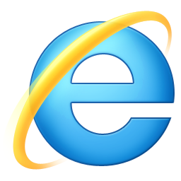
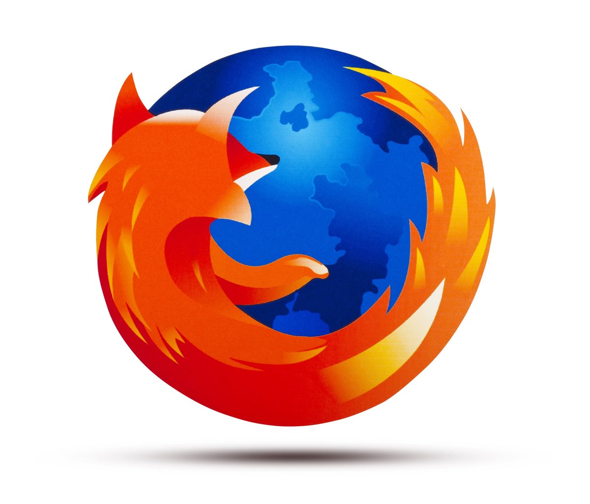
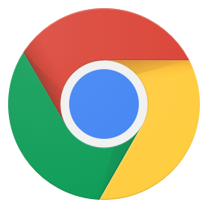
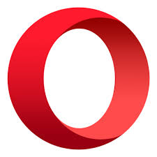
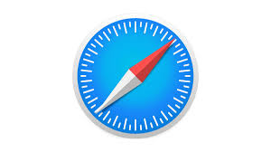

Les navigateurs web sont des logiciels complexes et en constante évolution, tant au niveau des fonctionnalités, qu'au niveau de la sécurité, car des nouvelles fonctionnalités offrent de nouveaux angles d'attaque.
WorldWideWeb, le premier navigateur.
Le premier navigateur s'appelle WorldWideWeb. Il est développé par l'inventeur du Web, Tim Berners-Lee, en octobre-novembre 1990. C'est un navigateur en mode graphique. Ce premier navigateur était en plus un éditeur HTML, ce qui n'est pas commun. La rapidité de développement a été rendue possible par l'ordinateur choisi pour ce projet, un NeXT. Toutefois, le choix de cet ordinateur rare a sévèrement limité la diffusion du navigateur. Plus tard, le navigateur est renommé Nexus pour éviter la confusion avec le World Wide Web.
Le premier navigateur pour le système X Window sur Unix fut Erwise, créé en 1992 en Finlande par les étudiants Kim Nyberg, Kari Sydänmaanlakka, Teemu Rantanen, et Kati Borgers (née Suominen)4.
Le troisième navigateur fut ViolaWWW.
En 1993, apparaît NCSA Mosaic. Ce navigateur disponible sur de nombreux systèmes provoqua l'accélération fulgurante et exponentielle du Web. Il est le premier navigateur à afficher les images (GIF et XBM) dans les pages web elles-mêmes, puis à supporter les formulaires interactifs dans les pages.
Logo Netscape
Logo Netscape
Dès 1995, Netscape Navigator devint le navigateur dominant, développé par Marc Andreessen, ancien développeur de Mosaic.
En 1995 sortit également Internet Explorer 1 de Microsoft.
À partir de 2000, et après plusieurs années de « guerre des navigateurs » (voir Évolution de l'usage des navigateurs web), c'est Internet Explorer qui devint le navigateur le plus utilisé. La raison en est principalement sa pré-installation au sein de Microsoft Windows, le système d'exploitation le plus utilisé sur les ordinateurs personnels à cette époque.
À compter de 2005, on note une régression de la part de marché d'Internet Explorer, surtout au bénéfice de Mozilla Firefox.
En décembre 2008 sort le navigateur Google Chrome, édité par Google. En 2010 il fait partie des trois navigateurs les plus utilisés5 et en 2012, il devient un des navigateurs les plus utilisés6.
De nombreux autres navigateurs, appelés navigateurs alternatifs, se partagent les miettes, notamment :
les navigateurs basés sur le moteur de rendu Gecko de Mozilla Firefox (dont K-Meleon, SeaMonkey, Flock, IceWeasel et Galeon) ;
les navigateurs basés sur Presto (Suite internet Opera version 9 et plus, Opera Mobile, Opera Mini, Wii Internet Channel, Nintendo DS Browser, Sony Mylo) ;
les navigateurs basés sur KHTML du projet KDE (Konqueror) ou sur son fork WebKit (Safari d'Apple, OmniWeb d'OmniGroup, Midori du projet Xfce, Epiphany).
Devant le développement croissant des smartphones et tablettes numériques, plusieurs concepteurs de navigateurs sortent des versions mobiles ; Le navigateur Firefox Mobile (nom de code Fennec) est la version mobile de Firefox, Opera Mobile pour Opera, Internet Explorer Mobile la version mobile d'IE, etc. Des éditeurs proposent des navigateurs uniquement pour mobiles : UC Browser, Dolphin Browser, etc.
De plus, depuis le milieu des années 1990, il a toujours existé une multitude d'autres navigateurs plus ou moins populaires.
voici different navigateurs web :
Google Chrome
Mozilla Firefox
Internet Explorer
Safari
Opera
Logos des différents navigateurs




